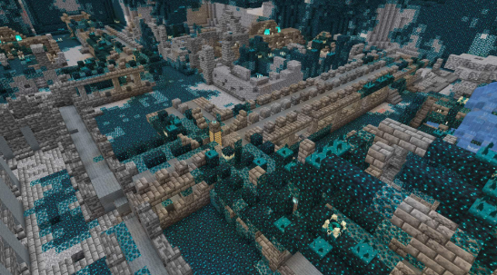

The Ancient City is one of our favorite structures since it provides overpowered loot. However, traversing through this structure is really challenging since the Warden, one of the most difficult mobs to deal with, might spawn.
An image of the Ancient City's layout:
The Ancient City is a very large structure that spawns within a Deep Dark Biome. The City contains long corridors with 2-block-deep layers of gray wool on the floor, and some rugs made of blue, light blue and cyan wool or carpet floors. There are some small ruins in the city with chest that contain very good loot. This city is built with blocks such as deepslate and reinforced deepslate. The entire city is covered with sculk blocks since the structure is part of the Deep Dark biome. There are also tons of sculk sensors here that when triggered by noise, will cause The Warden to spawn.
An image of what the city looks like in-game:
As stated earlier, this structure is the home of the Warden. The Warden spawns thanks to blocks called sculk shriekers. When a player or entity makes a noise, blocks called sculk sensors will send signals to sculk shriekers, which will summon the Warden after a certain amount of noise is made. To prevent this from happening, crouch at all times while navigating through the city and prevent making noise as much as possible. If you accidentally summoned the Warden, stay calm and keep crouching. The Warden is blind, but has a very good sense of sound. Any type of noice, including the player's footsteps will attract the Warden. Since this city is the home of the Warden, there is a large frame that can be found in the center of the city that resemble the Warden.